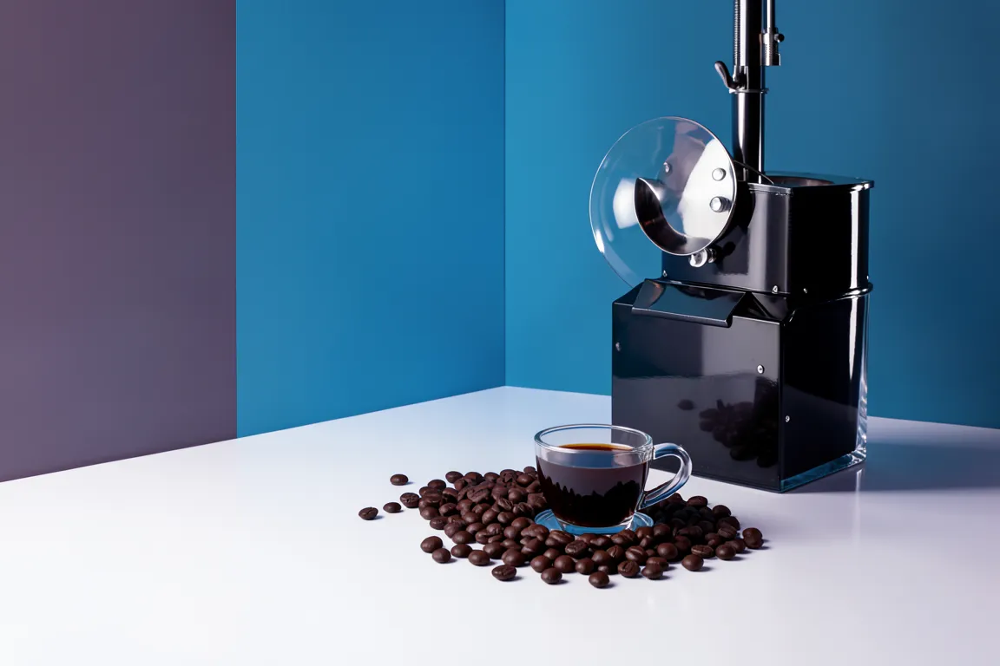

Прозрачное изогнутое стекло, которое искажает содержимое за собой, с бликовыми краями, тоном, подстраивающимся под фон, и плавающими элементами управления. Apple представила его в 2025 году, и он идёт дальше матового стекла.

Главная идея
Элементы управления — прозрачная линза над содержимым: интерфейс парит, преломляет страницу и не мешает.
Принципы дизайна
Делайте слой стекла с размытием фона 16–40px, насыщенностью 160–200% и оттенком белого или цвета фона при 8–20% непрозрачности.
Рисуйте бликовый край: внутренняя граница 1px белого при 40–60% сверху и слева и белого при 10% снизу и справа.